SIENA, NIPS-CERN, UFJF
Redes neurais, do neurônio ao fractal
Aula 2: derivada, gradiente e gradiente descendente
02/10/2026. C∴ Chrysthofer A. A. Afonso
A Knobby Adaline, de Widrow e Hoff, que aprendia pelo gradiente: os botões são os pesos, e o medidor, o erro. Stanford Today, 1963, domínio público nos Estados Unidos
Limiar, aula 2: derivada, gradiente e gradiente descendente
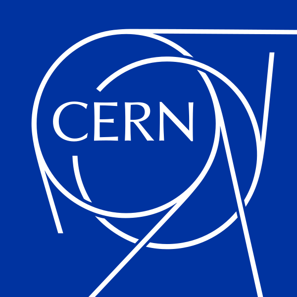
1 · Revisão
1
2
3
4
Limiar, aula 2: derivada, gradiente e gradiente descendente
1 · Revisão
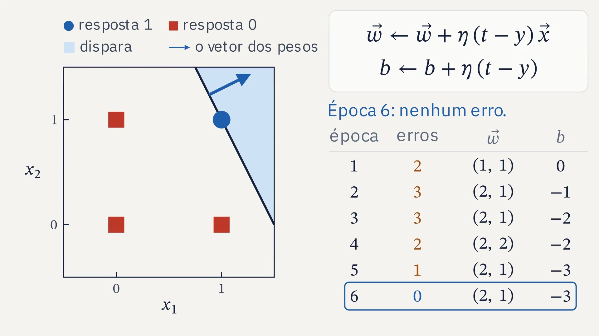
Limiar, aula 2: derivada, gradiente e gradiente descendente
1 · Revisão
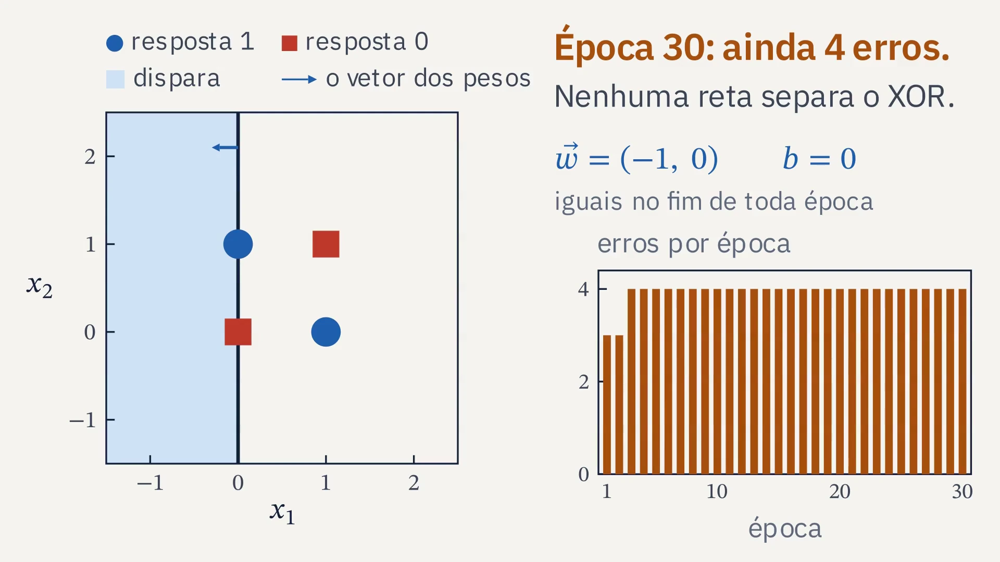
Limiar, aula 2: derivada, gradiente e gradiente descendente
2 · Seminário
Limiar, aula 2: derivada, gradiente e gradiente descendente
3 · O neurônio sem o degrau
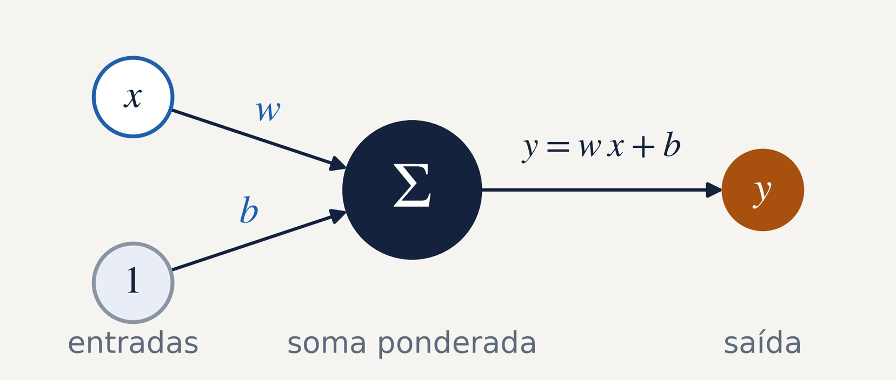
Com uma entrada, o neurônio é uma reta: w é a inclinação, e b, a altura em que ela corta o eixo.
Sem o degrau, o erro y − t tem tamanho: diz quanto e para que lado o neurônio errou.
Limiar, aula 2: derivada, gradiente e gradiente descendente
3 · O neurônio sem o degrau
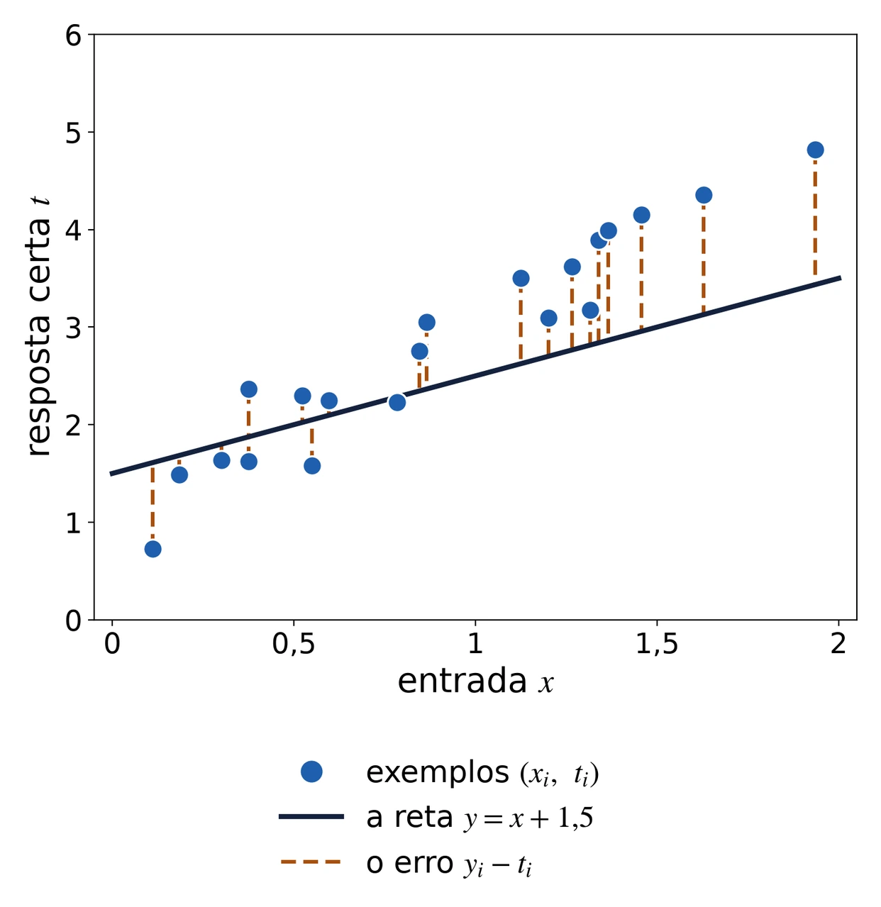
L de w e b é a média, de i igual a 1 até N, dos quadrados dos erros
A reta da figura, y = x + 1,5, tem L = 0,556. A melhor reta tem L = 0,087.
Limiar, aula 2: derivada, gradiente e gradiente descendente
3 · O neurônio sem o degrau
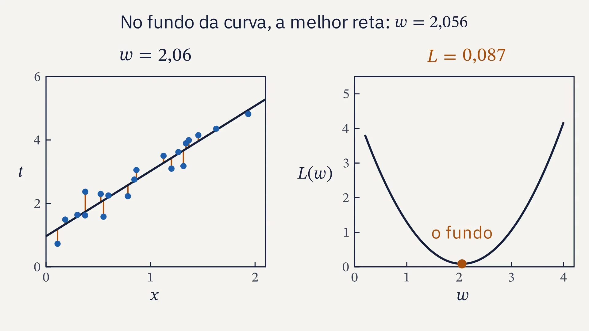
Limiar, aula 2: derivada, gradiente e gradiente descendente
3 · O neurônio sem o degrau
Limiar, aula 2: derivada, gradiente e gradiente descendente
4 · A derivada
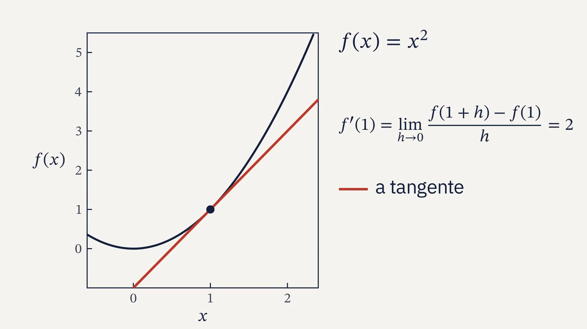
Limiar, aula 2: derivada, gradiente e gradiente descendente
4 · A derivada
Três regras que bastam
c é um número fixo; f e g, duas funções
1
3
0,5
2,5
0,1
2,1
0,01
2,01
Em x = 1, a razão vale 2 + h: a derivada numérica.
Limiar, aula 2: derivada, gradiente e gradiente descendente
4 · A derivada
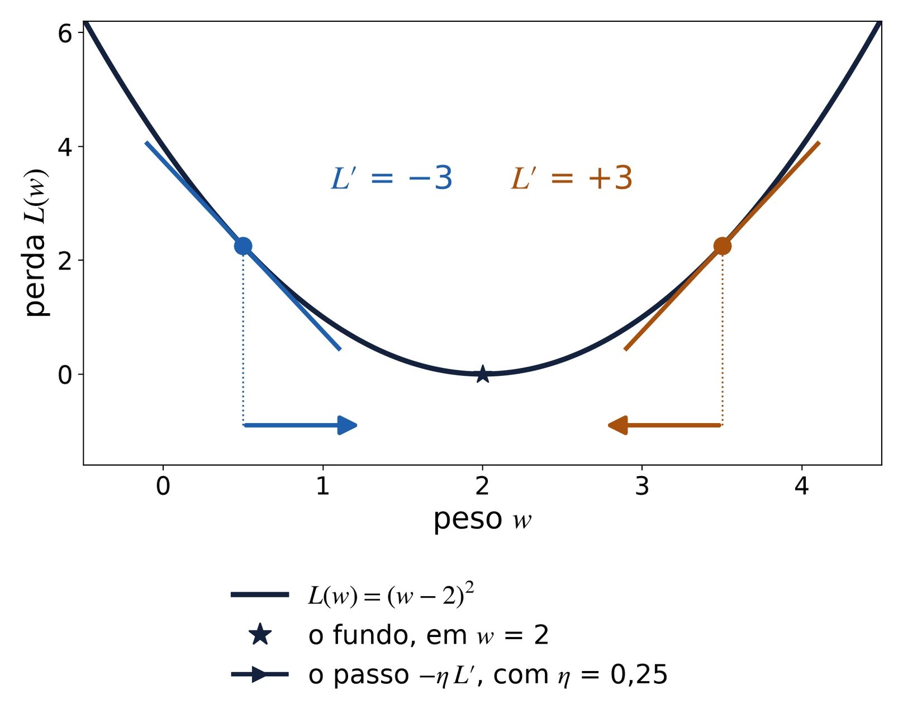
L′ < 0: a perda cai para a direita, e w aumenta.
L′ > 0: a perda cai para a esquerda, e w diminui.
Longe do fundo, a inclinação é grande, e o passo também; perto, os passos encolhem sozinhos.
Limiar, aula 2: derivada, gradiente e gradiente descendente
5 · Derivada parcial e gradiente
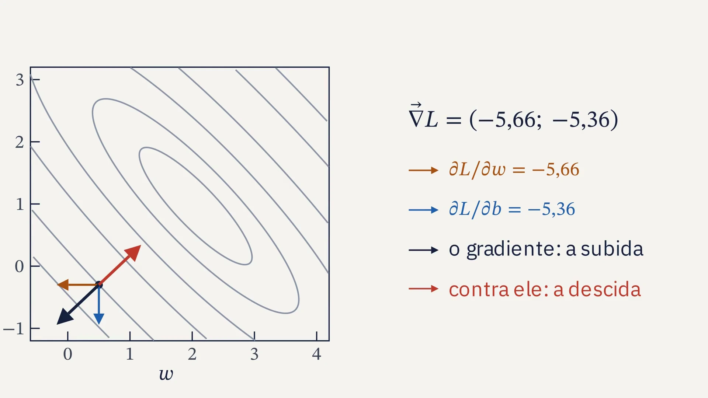
Limiar, aula 2: derivada, gradiente e gradiente descendente
5 · Derivada parcial e gradiente
derivada parcial de L em relação a w: só w varia, e b fica parado
De onde vem
é uma parábola em w; derivando em w, sai 2(yᵢ − tᵢ) xᵢ
Conferido
em (0,5; −0,3), a fórmula e a derivada numérica dão (−5,6643; −5,3552)
Limiar, aula 2: derivada, gradiente e gradiente descendente
5 · Derivada parcial e gradiente
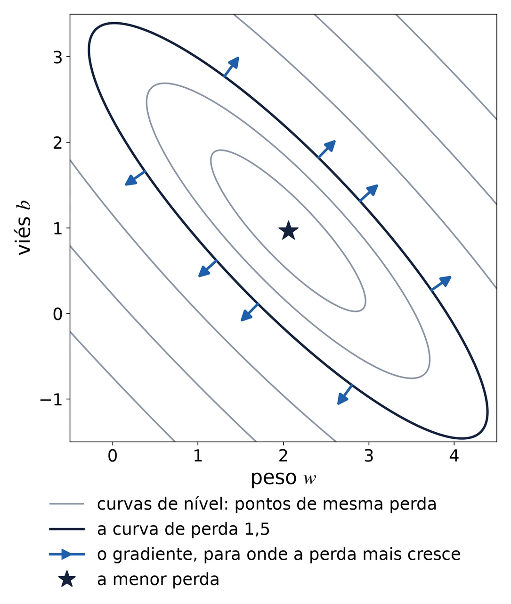
nabla L, o gradiente: o vetor das derivadas parciais
Aponta para onde a perda mais cresce. Descer mais depressa é andar contra ele.
De onde vem o nome: gradiente
do latim gradiens, que anda, de gradior, dar passos, de gradus, passo; a mesma raiz de degrau, a função da aula 1.
Limiar, aula 2: derivada, gradiente e gradiente descendente
6 · Gradiente descendente
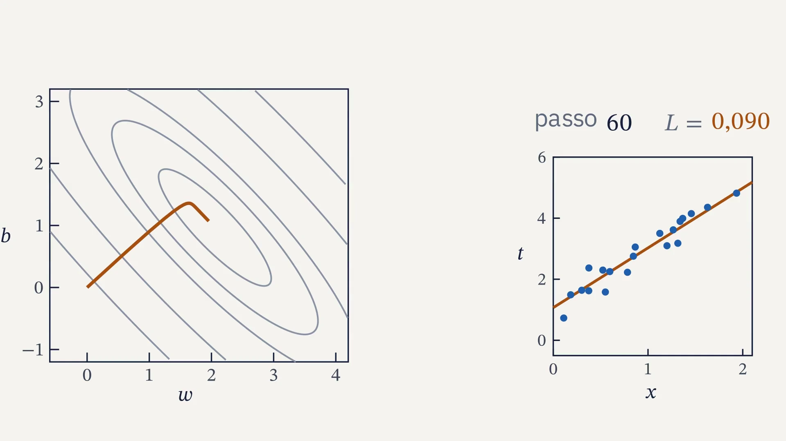
Limiar, aula 2: derivada, gradiente e gradiente descendente
6 · Gradiente descendente
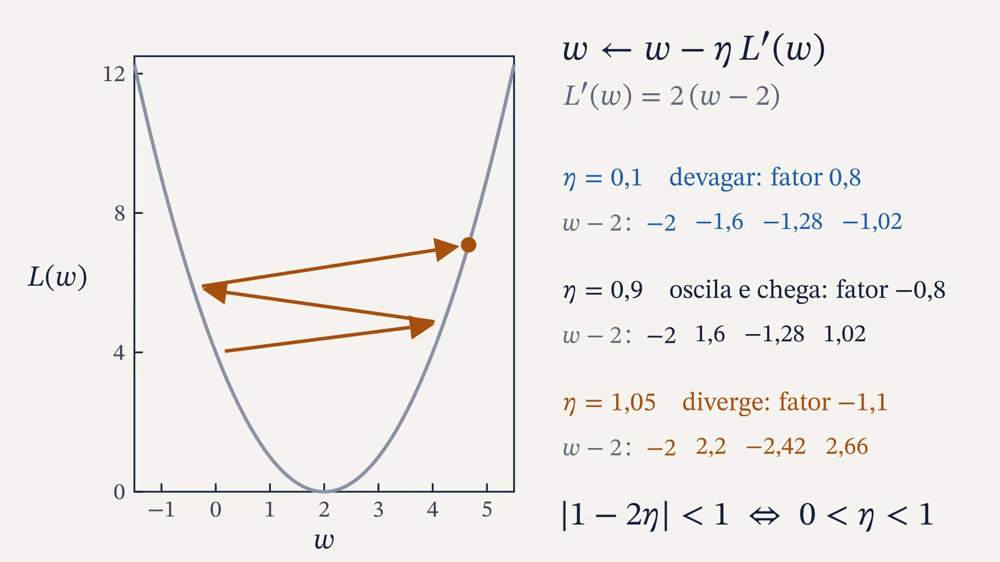
Limiar, aula 2: derivada, gradiente e gradiente descendente
6 · Gradiente descendente
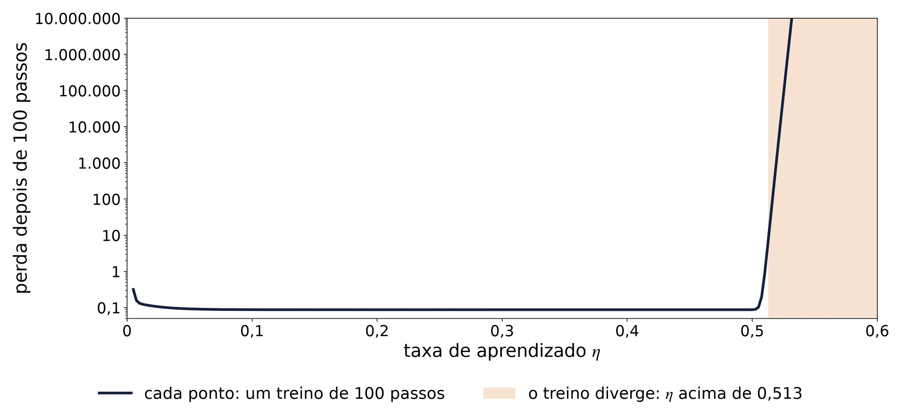
Com a reta, o treino converge até η ≈ 0,513 e explode acima. No projeto de dezembro, uma taxa por camada, e a fronteira vira uma curva: no artigo de Sohl-Dickstein, fractal.
Limiar, aula 2: derivada, gradiente e gradiente descendente
7 · De onde vem
“Para achar os valores de x, y, z, … que satisfazem a equação u = 0, basta fazer a função u decrescer indefinidamente, até que ela se anule.”
Augustin-Louis Cauchy, Comptes rendus da Academia de Ciências de Paris, 18 de outubro de 1847, tradução livre
θ, teta, é o passo; X, a derivada parcial em x
Augustin-Louis Cauchy, 1789 a 1857. Louis Grégoire e Deneux, por volta de 1840, domínio público
Limiar, aula 2: derivada, gradiente e gradiente descendente
7 · De onde vem
A regra, um exemplo por vez
a do perceptron com z, a soma antes do degrau, no lugar de y
Virou o algoritmo LMS e o começo dos filtros adaptativos: aqui, caixa-preta, só a história.
Bernard Widrow com uma Adaline. Stanford Today, 1963, domínio público nos Estados Unidos
Limiar, aula 2: derivada, gradiente e gradiente descendente
8 · O código
1
Sortear 20 pontos em volta de t = 2x + 1, com a semente fixa
2
Escrever a perda, o erro quadrático médio
3
Escrever as duas derivadas parciais e conferir com a derivada numérica
4
O laço: 100 passos, guardando a perda de cada um
5
Treinar com várias taxas e achar a que diverge
O NumPy que resolve
rng = np.random.default_rng(2)
x = rng.uniform(0, 2, 20)
y = w * x + b
np.mean((y - t) ** 2)
com arrays, a conta vale para os 20 pontos de uma vez, sem laço
Limiar, aula 2: derivada, gradiente e gradiente descendente
8 · O código
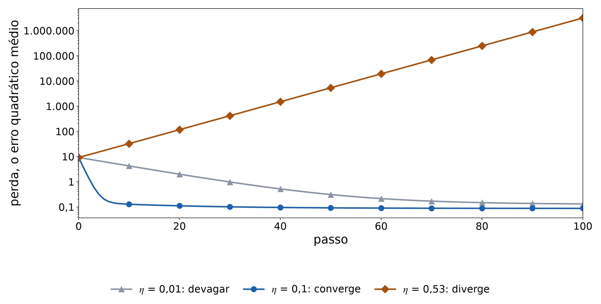
A perda a cada passo, uma curva por taxa, e a taxa a partir da qual o treino diverge. Cada um com os próprios pontos: o limiar muda com eles.
python aulas/02-gradiente/codigo/reta.py
Limiar, aula 2: derivada, gradiente e gradiente descendente
9 · Fechamento
Limiar, aula 2: derivada, gradiente e gradiente descendente
The video on this slide did not load. Open the file